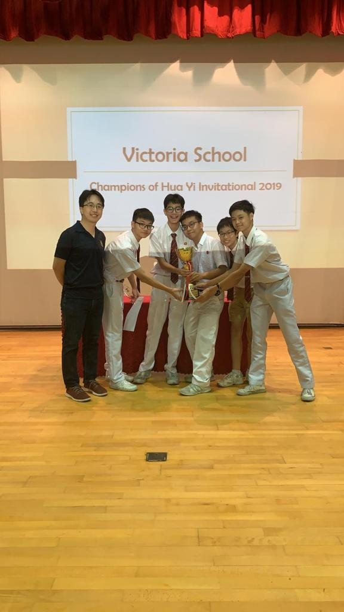
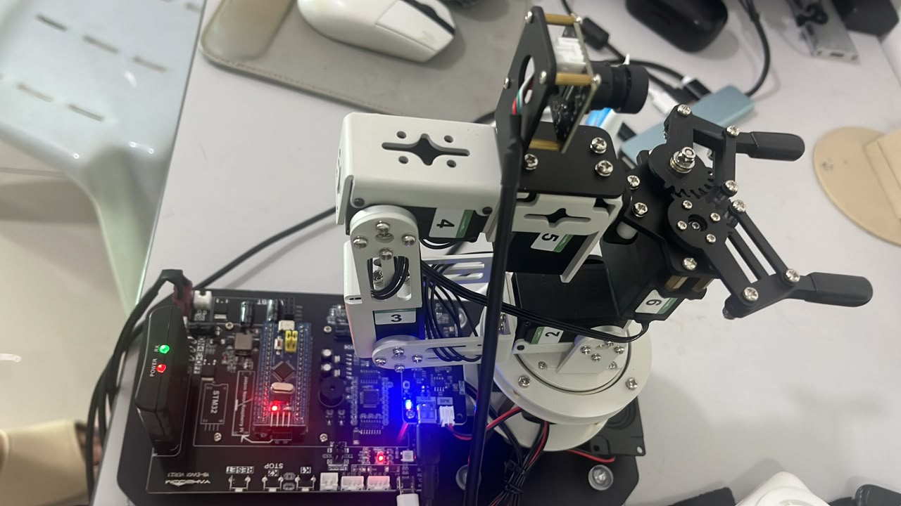
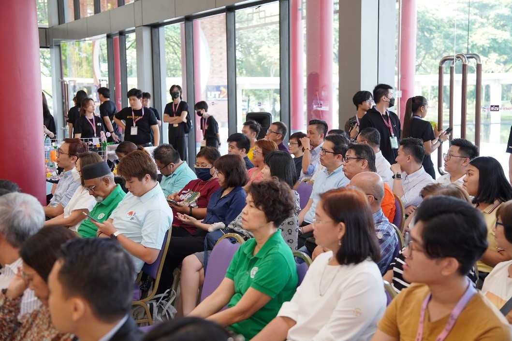
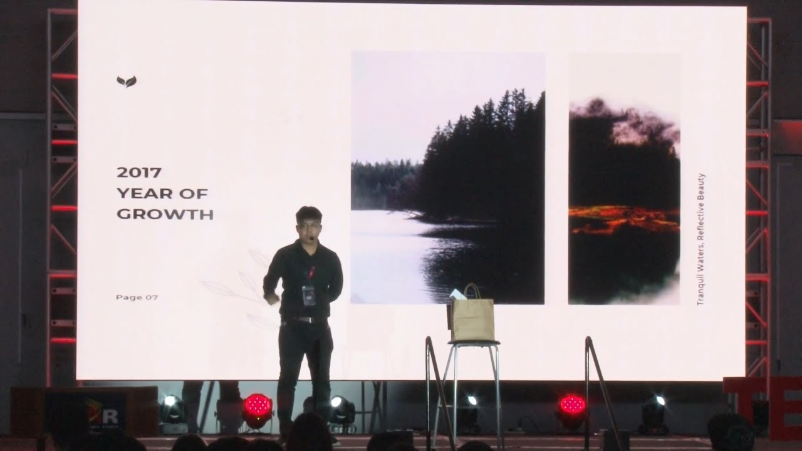
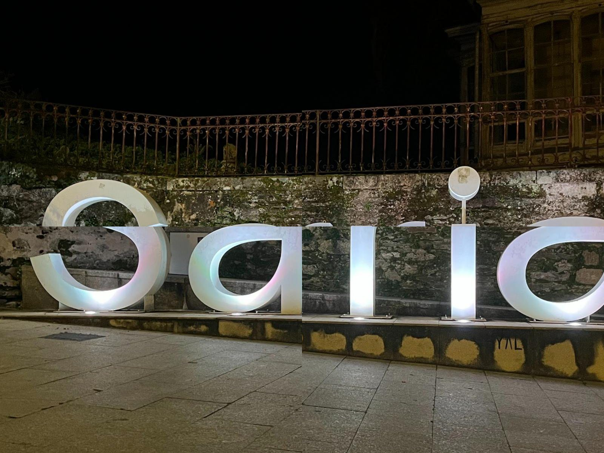

20162016 – 2018
Chong Hwa, KL
Joined debate. Lost badly, quit, came back 30 days later.
Electronic Engineering · UTAR · Malaysia
EEG / robotics / debate / TEDx speaker
Joined debate. Lost badly, quit, came back 30 days later.

2019 – 2022ASEAN Scholar. Hua Yi debate champions.

2023 – 2027Electronic Engineering. An EEG-driven robot arm for my FYP.

2024Logistics committee.
 2025 – 2026
2025 – 2026Research intern, TENG touch sensor.

2025A talk on mental health and fake optimism.
Bible study, and English classes for refugee students.

SpainSarria to Santiago, about 115 km on foot.